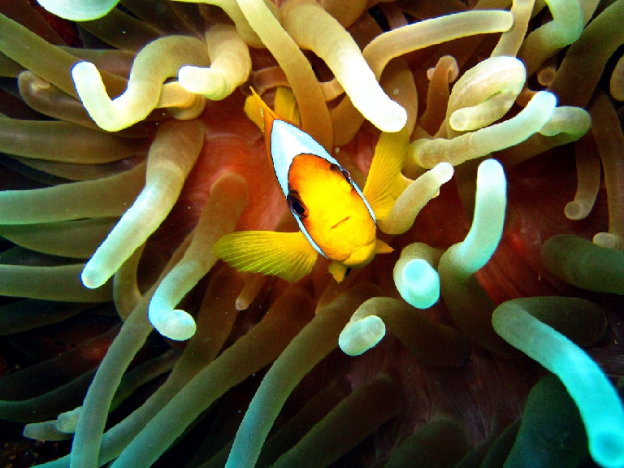
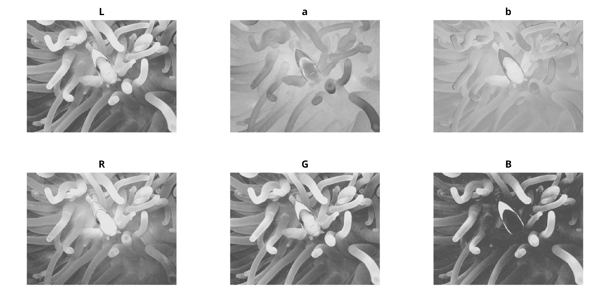
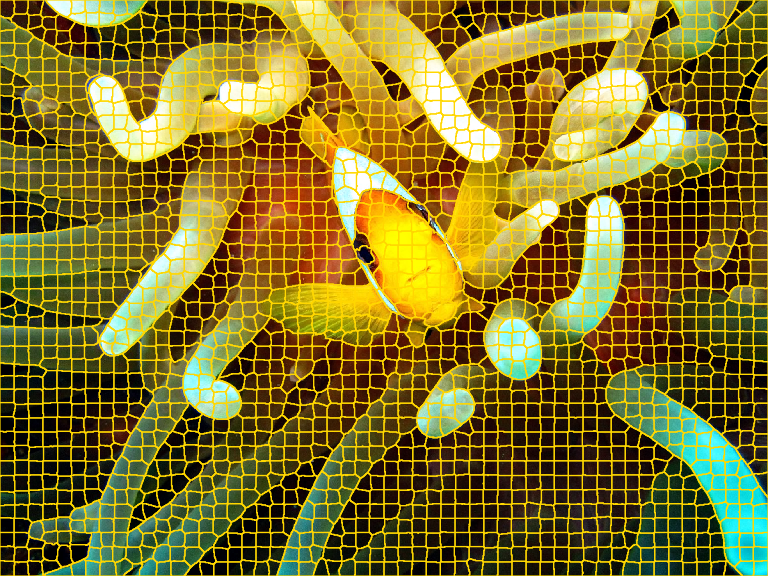
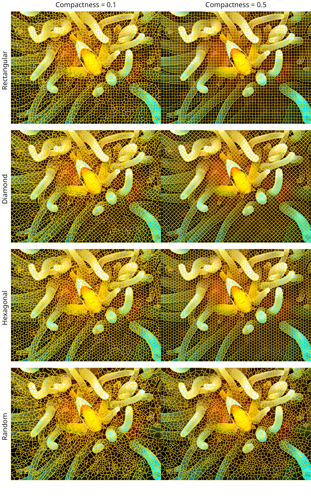

SNIC Segmentation Pipeline - Arrays
Source:vignettes/snic-array-pipeline.Rmd
snic-array-pipeline.RmdIntroduction
The snic package implements the Simple Non-Iterative Clustering (SNIC) algorithm for image segmentation, originally proposed by Achanta and Susstrunk (2017). The objective of this tutorial is to present the segmentation pipeline in a compact, reproducible manner using a small example.
Remote sensing workflow: If you work with
terraobjects, see the SNIC Segmentation Pipeline - SpatRaster vignette for a step-by-step tutorial tailored to multispectral imagery.
Image preparation
if (!requireNamespace("jpeg", quietly = TRUE)) {
stop("Install the 'jpeg' package to run this vignette.")
}
# Example RGB image shipped with the package (values in [0, 1])
img_path <- system.file("demo-jpeg/clownfish.jpeg", package = "snic",
mustWork = TRUE)
rgb <- jpeg::readJPEG(img_path)
dim(rgb) # rows, cols, channels
#> [1] 900 1200 3The rgb array is a 3-channel RGB image with dimensions
900 x 1200 pixels. R arrays are stored in column-major order, that means
the contiguous memory layout stores pixels of a column before moving to
the next column. Once all columns of a channel are stored, a new channel
begins.
snic_plot(rgb, r = 1, g = 2, b = 3)
Lab color space
Achanta and Susstrunk (2017) use the Lab color space. To convert the
RGB image to Lab, we use the convertColor() function from
the grDevices package. First we have to reshape the image
to a matrix with rows as image pixels and columns as color channels.
dims <- dim(rgb)
dim(rgb) <- c(dims[1] * dims[2], dims[3])
lab <- convertColor(rgb, from = "sRGB", to = "Lab", scale.out = 1 / 255)
# Back to canonical dimensions
dim(rgb) <- dims
dim(lab) <- dimsWe can use the snic_plot() function to display the Lab
image and visualize such transformations by comparing Lab channels with
RGB channels as follows.
# Grayscale palette
gray <- grDevices::gray.colors(256)
# Prepare figure layout
par(mfrow = c(2, 3))
# Plot Lab channels
snic_plot(lab, band = 1, col = gray, main = "L")
snic_plot(lab, band = 2, col = gray, main = "a")
snic_plot(lab, band = 3, col = gray, main = "b")
# Plot RGB channels
snic_plot(rgb, band = 1, col = gray, main = "R")
snic_plot(rgb, band = 2, col = gray, main = "G")
snic_plot(rgb, band = 3, col = gray, main = "B")
The Lab transformation cannot be done if one want use multispectral images like satellite images, which have more than three channels and comprise of different wavelengths other than red, green and blue.
Once prepared the image to be segmented we can create seeds and run SNIC following the pipeline described below.
Seeds creation
Seeds are the initial cluster centers. The package provides a
function to create seeds on a grid: snic_grid(). The
function takes the image, the type of grid, and the spacing between
seeds as arguments.
seeds <- snic_grid(lab, type = "rectangular", spacing = 22L)The seeds are stored as data frame with columns r and
c, representing the row and column indices of the seeds in
the image.
The function supports four different types of grid: “rectangular”, “diamond”, “hexagonal”, and “random”. The spacing parameter controls the spacing between seeds. For random seeds, the spacing parameter means the expected spacing between seeds. The density of seeds is the inverse of the spacing.
Run SNIC
The number of seeds define the number of segments. The compactness parameter controls the trade-off between geometric distance and feature similarity. The greater the compactness, more weight is given to geometric distance between pixels, and less to feature similarity. The default value is 0.5.
segs <- snic(lab, seeds, compactness = 0.25)Here, we defined a compactness of 0.25, which means that the algorithm will balance compactness and connectivity.
Segments visualization

The variable segs is an array of the same dimensions as
the input image, containing the segment labels for each pixel. It can be
used to extract features from the image, or to apply other image
processing operations.
dim(segs)
#> NULLNow that we followed the entire pipeline, we can explore different grid types and compactness values to see how they affect the segmentation.
Comparative grid types and compactness values
We consider four seed arrangements generated by
snic_grid(): rectangular, diamond, hexagonal, and random.
All are built with the same expected spacing.
seeds_rect <- snic_grid(rgb, type = "rectangular", spacing = 22L)
seeds_diam <- snic_grid(rgb, type = "diamond", spacing = 22L)
seeds_hex <- snic_grid(rgb, type = "hexagonal", spacing = 22L)
# Set seed for reproducibility
set.seed(42)
seeds_rand <- snic_grid(rgb, type = "random", spacing = 22L)We expect that the density of seeds among the different grid types are similar given the same spacing. This may differ slightly due to geometrical boundary effects.
For comparison, we use two compactness values: 0.1 and 0.5.
grids <- list(
seeds_rect, seeds_diam, seeds_hex, seeds_rand
)
results <- lapply(grids, function(seeds) {
list(
snic(rgb, seeds, compactness = 0.1),
snic(rgb, seeds, compactness = 0.5)
)
})The panels below display the RGB image with superpixel boundaries overlaid for each grid type (rows) and compactness value (columns).
# Prepare figure layout
par(mfrow = c(4, 2), oma = c(2, 2, 2, 0))
# Plot results
for (res in results) {
snic_plot(
rgb, r = 1, g = 2, b = 3, seg = res[[1]], mar = c(1, 0, 0, 0)
)
snic_plot(
rgb, r = 1, g = 2, b = 3, seg = res[[2]], mar = c(1, 0, 0, 0)
)
}
# Add column labels (compactness)
mtext(
"Compactness = 0.1", side = 3,
outer = TRUE, at = 0.25,
line = 0.5, font = 1
)
mtext(
"Compactness = 0.5", side = 3,
outer = TRUE, at = 0.75,
line = 0.5, font = 1
)
# Add row labels (grid types)
mtext(
"Rectangular", side = 2,
outer = TRUE, at = 3.5 / 4,
line = 0.5, font = 1, las = 3
)
mtext(
"Diamond", side = 2,
outer = TRUE, at = 2.5 / 4,
line = 0.5, font = 1, las = 3
)
mtext(
"Hexagonal", side = 2,
outer = TRUE, at = 1.5 / 4,
line = 0.5, font = 1, las = 3
)
mtext(
"Random", side = 2,
outer = TRUE, at = 0.5 / 4,
line = 0.5, font = 1, las = 3
)
Under moderate to high compactness condition, the rectangular and
diamond arrangements yield more axis-aligned boundary structure, while
the hexagonal and randomized seeds distribute initial cluster centers
more evenly in all directions. The choice among these layouts is
task-dependent; the pipeline itself remains the same: define seeds, run
snic(), and examine the resulting segments.
References
Achanta, R., & Susstrunk, S. (2017). Superpixels and polygons using simple non-iterative clustering. Proceedings of the IEEE Conference on Computer Vision and Pattern Recognition (CVPR). doi:10.1109/CVPR.2017.520